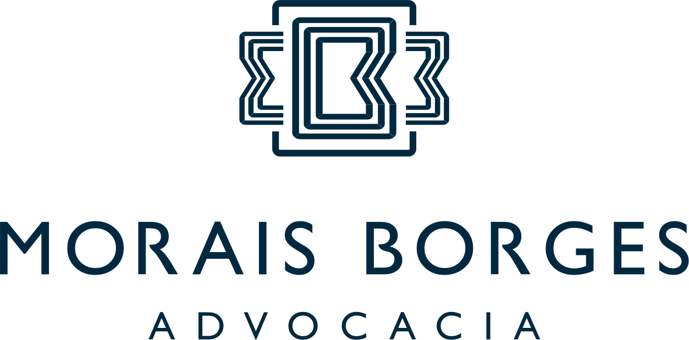

O início de uma trajetória
O escritório inicia sua atuação com o propósito de construir soluções jurídicas personalizadas, próximas e tecnicamente qualificadas.
Há mais de 14 anos defendendo empresários em Direito Tributário e Empresarial — presencialmente no Cariri e online em todo o Brasil.
5,0 no Google o escritório mais avaliado do Cariri
Iniciar contato
O patrimônio de um empresário raramente vaza por um lugar só. Atuamos nas cinco áreas onde o risco costuma aparecer ao mesmo tempo.
Revisão da carga tributária, aproveitamento de créditos e defesa em autuações fiscais.
Estrutura societária, contratos, sucessão e a separação entre o patrimônio da empresa e o do sócio.
Prevenção de passivo, revisão das rotinas de pessoal e defesa em reclamatórias.
Aquisição, locação, regularização e disputas sobre imóveis da empresa e do sócio.
Adequação de contratos e práticas comerciais, e defesa em demandas de consumidores.
João Borges Filho
OAB CE/24.881
O escritório inicia sua atuação com o propósito de construir soluções jurídicas personalizadas, próximas e tecnicamente qualificadas.
Reconhecimento da trajetória e da atuação junto ao ambiente empresarial da região.
Presença em um dos principais eventos jurídicos da América Latina.
Preparada para atender clientes presencialmente no Cariri e online em todo o Brasil.
5,0 267 avaliações no Google
Fomos atendidos pela advogada Wyllyara e também pelo Judá, que junto com todo o escritório nos acolheram com muita atenção e profissionalismo. Minha mãe foi vítima de um golpe bancário de mais de R$ 10 mil, e eles não mediram esforços para nos ajudar. Sempre prestativos, claros nas orientações e comprometidos, conduziram o processo até conseguirmos recuperar o valor perdido. Somos muito gratos pelo excelente trabalho e pelo cuidado com que fomos tratados. Recomendo de olhos fechados!
Atendimento excelente, de qualidade são muito claros, objetivos, e profissionais
Até o momento só tenho a agradecer essa equipe que tenho ctz foi Deus quem preparou eles na minha vida
Super recomendo eles atendem o Brasil todo pra terem uma ideia sou de São Paulo capital
Só tenho agradecer primeiramente a Deus e Segundo ao trabalho de vocês quê trabalha muito bem nos traz uma segurança e uma cinceridade muito clara e Objetiva são poucos quê trabalha da forma correta como vocês mais uma vez eu quero deixar O meu agradecimento 🙏🏻 e quem tiver alguma causa quê não está sendo resolvida entre em contato com a recepcionista Karol e a Dr Pryscila quê elas vão te atender super bem com muito amor e carinho e acima disso tudo muito esforço e dedicação eu recomendo por isso estou deixando essas 5 estrelas pq eles(a) realmente merecem Deus Abençõe grandemente!!!!❤️😍🥰🙏🏻🤗
Escritório de excelência, com profissionais competentes, humanos e sensíveis, características fundamentais para nos ajudar a solucionar nossas questões que envolvam a justiça.
Um dos pontos principais que encontrei, ao precisar dos serviços do escritório Morais Borges Advocacia foi a maneira como fui acolhida e tive minha demanda ouvida com atenção e cuidado. Depois disso, me chamou a atenção a celeridade e o zelo dos profissionais, sempre prontos a tirar todas as minhas dúvidas.
Estão de parabéns. Recomendo sem pestanejar.
O advogado João Filho e sua equipe tem zelo e compromisso com o processo do cliente. Conseguem humanizar as relações e abraçam a causa mostrando o interesse pela totalidade dos fatos sem desconsiderar a carga emocional do cliente. Assumiu meu processo com muita humanização, prestou e presta o melhor serviço, buscando sempre a melhor opção. De uma receptividade ímpar acolhe e caminha sempre junto, sem dúvida alguma é o melhor escritório de advocacia da região.
Atendimento exemplar, com profissionais de alto padrão, trabalhando de maneira responsável, justa e honrosa. O serviço prestado por vocês ajudam a nossa sociedade a transformar conhecimento em justiça, desafios em vitórias e, é claro, direitos em realidade! Parabéns a todos que compõem a Morais Borges Advocacia!
Fale com a Morais Borges e explique o que você precisa. Nossa equipe analisará seu cenário para direcionar o atendimento ideal.
Fale com a nossa equipeNúmero do WhatsApp pendente — o botão só funciona depois que ele entrar.